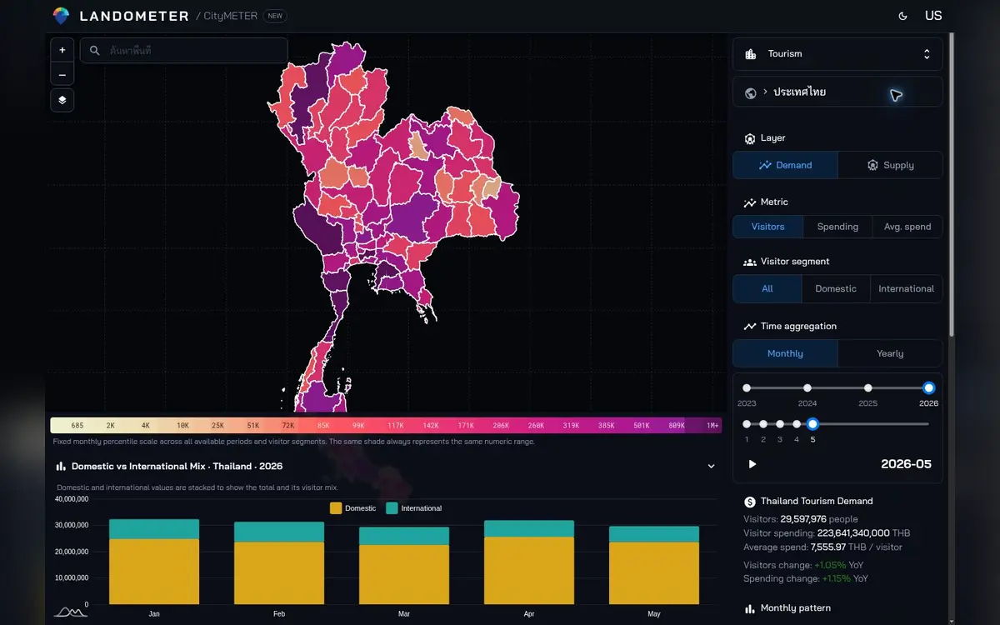

Location CityMETER · ประเทศไทย · พฤษภาคม 2569
เดือนเดียวของการท่องเที่ยว มีทั้งจำนวนการเยี่ยมเยือนและเงินที่รายงาน
ความต้องการท่องเที่ยว: จำนวนนักท่องเที่ยวและค่าใช้จ่าย
เดือนพฤษภาคม 2569 แสดงจำนวนผู้เยี่ยมเยือน 29,597,976 ตามสถิติที่เลือก และค่าใช้จ่าย 223,641.34 ล้านบาท การมองสองด้านนี้พร้อมจังหวัดและช่วงเวลา ช่วยตั้งคำถามว่าตลาดใดควรศึกษาและควรไปดูในฤดูกาลไหน

ประเทศไทย · พฤษภาคม 2569 · เปิดเมื่อ 10 ต.ค. 2569 · สถิติผู้เยี่ยมเยือนและค่าใช้จ่ายรายเดือน · เปรียบเทียบพื้นที่ระดับจังหวัด
จำนวนการเยี่ยมเยือนกับค่าใช้จ่ายเป็นคนละมุม
ทีมที่วางแผนสินค้าและบริการสำหรับนักท่องเที่ยวต้องรู้ว่าตัวเลขใดตอบเรื่องปริมาณ และตัวเลขใดตอบเรื่องค่าใช้จ่าย การแยกชื่อมาตรวัดตั้งแต่ต้นช่วยให้การคุยไม่คลาดกัน มุมมองรายเดือนเปิดโอกาสให้เลือกช่วงเดียวกันแล้วอ่านจังหวัดที่เกี่ยวข้องกับงาน จากนั้นจึงค่อยลงรายละเอียดว่าต้องศึกษาเรื่องกิจกรรม ที่พัก หรือช่องทางติดต่อผู้ประกอบการในพื้นที่ต่อ
เลือกเดือนให้ตรงกับจังหวะงาน
เดือนพฤษภาคมเป็นตัวอย่างหนึ่งของการอ่านสถิติในช่วงเวลาที่ระบุได้ หากงานเกี่ยวกับอีกฤดูหนึ่ง ควรเปลี่ยนไปอ่านช่วงที่เกี่ยวข้องแล้วเก็บปีและเดือนไว้กับผลเทียบ การมองหลายช่วงอย่างเป็นระบบช่วยให้ทีมเตรียมคำถามสำหรับคนในพื้นที่ เช่น ช่วงใดควรไปสำรวจกิจกรรมหรือคุยกับผู้ให้บริการ การมีช่วงเวลาที่ชัดทำให้คำตอบจากแต่ละจังหวัดกลับมารวมเป็นงานศึกษาเดียวกันได้
จากอันดับจังหวัดไปสู่สิ่งที่ต้องเรียนรู้
การเรียงจังหวัดช่วยให้เลือกพื้นที่ที่จะศึกษาต่อ แต่ควรมีเหตุผลว่าต้องการตอบเรื่องใด เลือกมาตรวัดให้ตรงกับคำถาม แล้วจดจังหวัดที่อยากเข้าใจพร้อมประเด็นที่ต้องถาม เช่น ลักษณะกิจกรรมหรือรูปแบบบริการที่มีในช่วงนั้น ข้อมูลแหล่งท่องเที่ยวและกิจกรรมช่วยเพิ่มรายการสำหรับค้นต่อได้ เมื่อออกไปสำรวจหรือสัมภาษณ์ ให้บันทึกสิ่งที่พบกลับมาพร้อมสถานที่และช่วงเวลา
วางกลยุทธ์ด้วยคำถามที่มีทั้งที่และเวลา
ผลที่ดีจากการอ่านเดือนพฤษภาคม 2569 อาจเป็นเพียงจังหวัดสองแห่งที่ต้องศึกษาต่อในช่วงเดียวกัน พร้อมเหตุผลว่าทำไมจึงเลือก และรายชื่อกิจกรรมหรือผู้ให้บริการที่จะติดต่อ เก็บทั้งปริมาณผู้เยี่ยมเยือน ค่าใช้จ่าย หน่วย และช่วงเวลาไว้ในบันทึกเดียวกัน การทำเช่นนี้ช่วยให้การประชุมครั้งต่อไปเริ่มจากหลักฐานและคำถามที่ชัด มากกว่าความรู้สึกว่าจังหวัดหนึ่งกำลังเป็นที่นิยม
ลองดูพื้นที่ของคุณ
เลือกช่วงเวลาและมาตรวัดหนึ่งเรื่อง เทียบจังหวัดที่เกี่ยวข้อง แล้วเตรียมการศึกษากิจกรรมและบริการในพื้นที่
แหล่งข้อมูลและข้อควรรู้
แหล่งอ้างอิงที่ตรวจเทียบแล้ว
- ผู้เผยแพร่ข้อมูล
- กระทรวงการท่องเที่ยวและกีฬา / การท่องเที่ยวแห่งประเทศไทย
- ที่มา
- จำนวนผู้เยี่ยมเยือนและรายได้อ้างอิงข้อมูลกระทรวงการท่องเที่ยวและกีฬา โดยแปลงหน่วยเพื่อเปรียบเทียบ ส่วนกิจกรรมและแหล่งท่องเที่ยวอ้างอิงข้อมูลของ ททท.
- ช่วงเวลาของข้อมูล
- ข้อมูลสรุปรายเดือนและจังหวัด อ่านเดือน ปี และหน่วยของตัวเลขที่เลือก ข้อมูลอาจได้รับการปรับปรุงภายหลัง
- พื้นที่ครอบคลุม
- มีหน้าสรุประดับประเทศไทยและอันดับจังหวัด; ขอบเขตข้อมูลต้นทางยังไม่ระบุ
- ระดับรายละเอียด
- ระดับจังหวัดเป็นระดับเปรียบเทียบย่อยสุดที่ยืนยันได้จากหน้าที่ตรวจ
อ่านเพิ่มเมื่อต้องเปรียบเทียบหรืออ้างอิง
ผู้เยี่ยมเยือนไม่จำเป็นต้องเป็นคนไม่ซ้ำ ตัวเลขอาจปรับปรุงได้ และภาพระดับจังหวัดไม่แทนความต้องการหน้าร้าน
ต้องยืนยันนิยามผู้เยี่ยมเยือน ค่าใช้จ่าย วิธีแยกตลาด และนโยบายปรับปรุงตัวเลขก่อนสรุปเชิงนโยบาย
ตัวอย่างที่เปิดดู
 ดราฟSoftware development
ดราฟSoftware development
แชร์เรื่องนี้ให้คนที่กำลังหาคำตอบ
ส่งต่อให้ทีม หรือเก็บลิงก์ไว้กลับมาดูพื้นที่ด้วยกัน